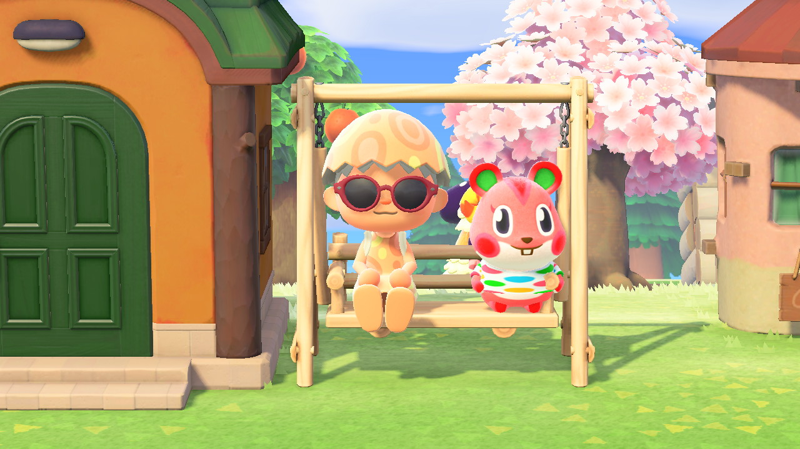
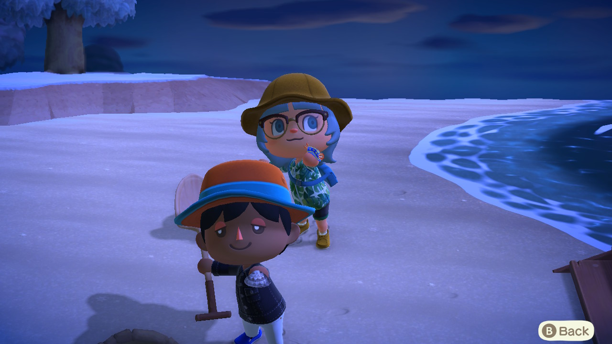
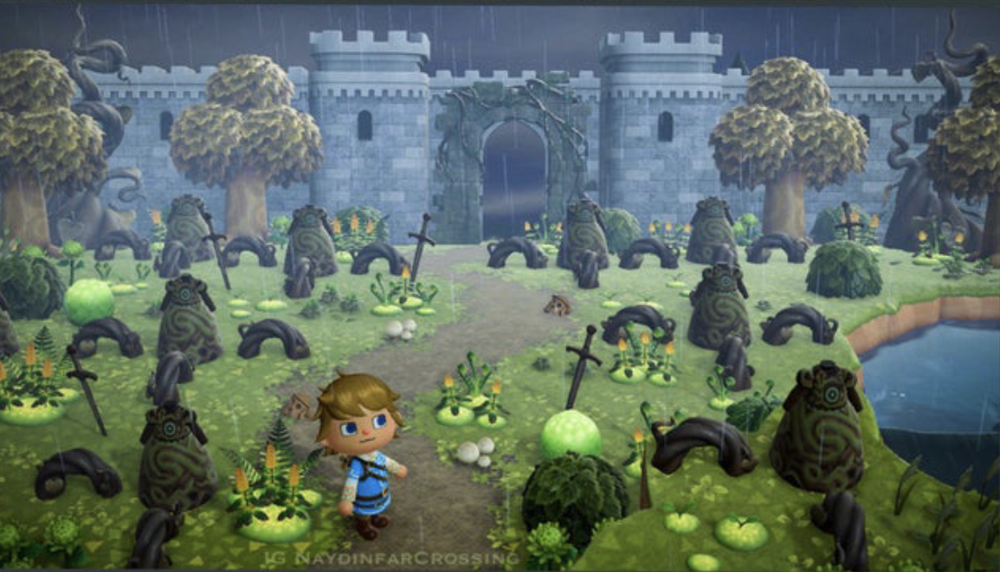
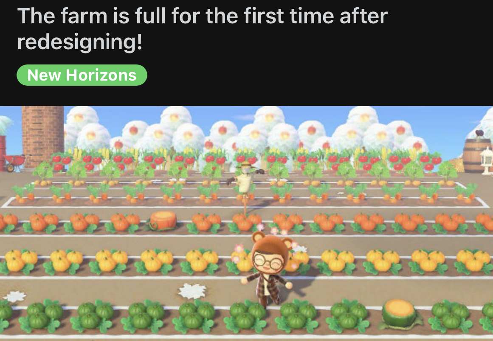

OVERVIEW
Animal Crossing is a game where you build up your own island and have animal villagers live on it as well. It’s a pretty free-form game where you can focus on designing your island, collecting fossils, building relationships with villagers, or anything else! You begin the game by meeting Tom Nook, a racoon who tells you to purchase an "island getaway package" and then flies you to a mysterious island you now live on (while in debt to Tom Nook).
VILLAGERS
This is my personal favorite part of the game! You get to invite villagers like this adorable hamster, Apple, to live on your island. You can talk to them, visit their homes, and give them gifts. You first join your island with two other animal villagers, but as you progress in the game you can visit mystery islands and search for villagers you want to invite.

FISH, BUGS, SEA CREATURES GALORE!
One activity you can do in animal crossing is fish, catch bugs, and dive in the ocean for various sea creatures. Once you catch something, you can donate them to the island museum or sell them for money (bells).

WORLD-BUILDING
A lot of other players like to make their islands pretty by decorating and terraforming. Terraforming is a process by which you can build/break down cliffs, and create lakes/waterfalls. A lot of people create a theme for their island, like this Zelda-inspired island.

COMMUNITY
There is a large animal crossing community on social media platforms. People like to share their islands (which you can visit), clothes they have designed, and a lot more. People also stream themselves playing animal crossing and finding villagers to invite to their island.
